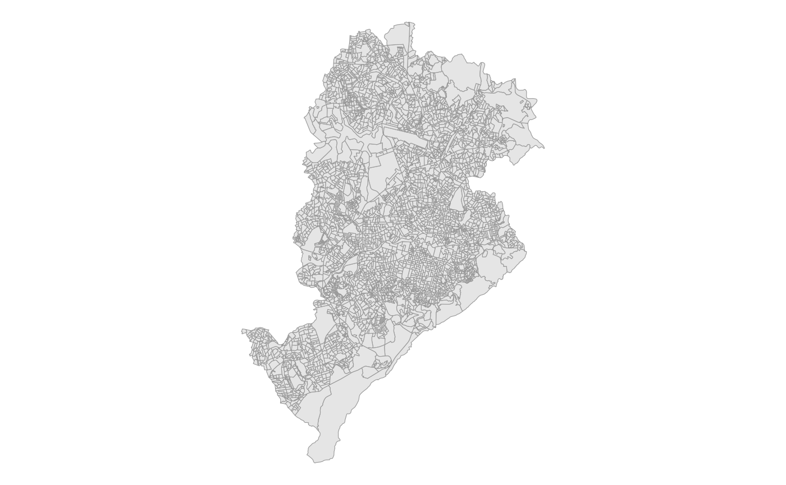
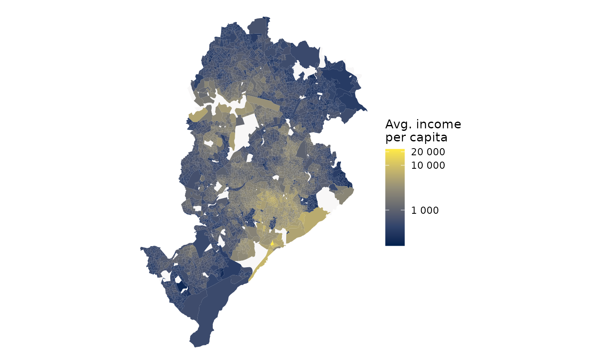
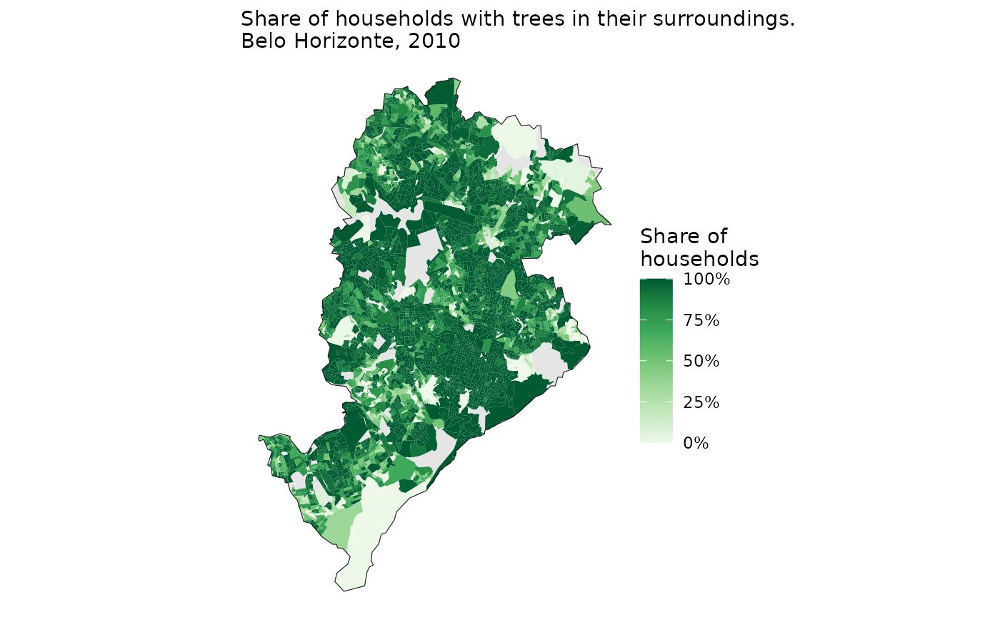

Perhaps the most commonly used datasets from Brazilian censuses are
the microdata of individuals and households. Nonetheless, IBGE also
makes available some extremely data on population and environmental
characteristics aggregated at the census tract level. In this vignette,
we show how to use the censobr package to easily access
census tract-level data using the read_tracts()
function.
At the moment, this function only includes data from the 2010 census.
Aggregated data at the census tract level are split into different datasets, and some of them are scattered across several files. For the sake of convenience, we have gathered all of the files into 8 different datasets:
"Basico""Entorno""Domicilio""Pessoa""Responsavel""PessoaRenda""DomicilioRenda""ResponsavelRenda"All of the data aggregated at census tracts are organized following the same logic.
In the cases when there are multiple files in the same dataset, we
add a reference to the number of the file as a prefix to the variable
name. To illustrate this, let’s have a look at the
"Domicilio" dataset. This dataset is based on two separate
tables: Domicilio01 and Domicilio02. So the names of
the columns in this dataset are organized as follows:
library(censobr)
dom <- read_tracts(year = 2010,
dataset = 'Domicilio',
showProgress = FALSE)
#> Downloading data and storing it locally for future use.
names(dom)[c(1:20,301:320)]
#> [1] "code_tract" "code_weighting" "code_muni"
#> [4] "code_state" "abbrev_state" "name_state"
#> [7] "code_region" "name_region" "domicilio01_V1005"
#> [10] "domicilio01_V001" "domicilio01_V002" "domicilio01_V003"
#> [13] "domicilio01_V004" "domicilio01_V005" "domicilio01_V006"
#> [16] "domicilio01_V007" "domicilio01_V008" "domicilio01_V009"
#> [19] "domicilio01_V010" "domicilio01_V011" "domicilio02_V050"
#> [22] "domicilio02_V051" "domicilio02_V052" "domicilio02_V053"
#> [25] "domicilio02_V054" "domicilio02_V055" "domicilio02_V056"
#> [28] "domicilio02_V057" "domicilio02_V058" "domicilio02_V059"
#> [31] "domicilio02_V060" "domicilio02_V061" "domicilio02_V062"
#> [34] "domicilio02_V063" "domicilio02_V064" "domicilio02_V065"
#> [37] "domicilio02_V066" "domicilio02_V067" "domicilio02_V068"
#> [40] "domicilio02_V069"To check the meaning of each variable, users can run the
data_dictionary(), which will open on the browser an
.html or .pdf file with the dictionary of
variables in each dataset
data_dictionary(year = 2010, dataset = 'tracts')
#>
|
| | 0%
|
|====== | 8%
|
|========== | 15%
|
|================ | 22%
|
|===================== | 30%
|
|========================== | 37%
|
|=============================== | 45%
|
|===================================== | 52%
|
|========================================== | 60%
|
|==================================================== | 75%
|
|========================================================== | 82%
|
|=============================================================== | 90%
|
|==================================================================== | 98%
|
|======================================================================| 100%
#> NULLNow let’s use a couple reproducible examples to illustrate how to work with census tract-level data. First, we need to load the libraries we’ll be using in this vignette.
In these examples below, example we’ll use the city of Belo Horizonte for demonstration purposes. So we can start by downloading the the geometries of the census tracts in the area. First, we need to download the geometries of all census tracts in the state of Minas Gerais (MG), and then keep only the ones in the municipality of Belo Horizonte. We’ll also download the municipality borders of BH.
muni_bh <- geobr::read_municipality(code_muni = 'MG',
year = 2010,
showProgress = FALSE) |>
filter(name_muni == "Belo Horizonte")
#> Using year 2010
tracts_sf <- geobr::read_census_tract(code_tract = "MG",
simplified = FALSE,
year = 2010,
showProgress = FALSE)
#> Using year 2010
tracts_sf <- filter(tracts_sf, name_muni == "Belo Horizonte")
ggplot() +
geom_sf(data=tracts_sf, fill = 'gray90', color='gray60') +
theme_void()
In this first example we’ll be creating a map of the spatial
distribution of average income per capita. We can find the information
on the the total number of residents in each census tract in the
"Basico" dataset, variable "V002". Meanwhile,
the information on income can be found in the
"DomicilioRenda" dataset, variable "V003".
Using the code below, we download the data and calculate the income per capita of all census tracts in Brazil.
# download data
tract_basico <- read_tracts(year = 2010,
dataset = "Basico",
showProgress = FALSE)
#> Downloading data and storing it locally for future use.
tract_income <- read_tracts(year = 2010,
dataset = "DomicilioRenda",
showProgress = FALSE)
#> Downloading data and storing it locally for future use.
# select columns
tract_basico <- tract_basico |> select('code_tract','V002')
tract_income <- tract_income |> select('code_tract','V003')
# merge
tracts_df <- left_join(tract_basico, tract_income) |> collect()
# calculate income per capita
tracts_df <- tracts_df |> mutate(income_pc = V003 / V002)
head(tracts_df)
#> code_tract V002 V003 income_pc
#> 1: 350320825000030 480 368357 767.4104
#> 2: 350320825000031 458 293191 640.1550
#> 3: 350320825000032 955 859297 899.7874
#> 4: 350320825000033 NA 0 NA
#> 5: 350320825000034 764 636266 832.8089
#> 6: 350320825000035 1026 1151032 1121.8635Finally, we can merge the spatial data with our per capita income estimates and map the results.
bh_tracts <- left_join(tracts_sf, tracts_df, by = 'code_tract')
ggplot() +
geom_sf(data = bh_tracts, aes(fill = income_pc), color=NA) +
geom_sf(data = muni_bh, color='gray10', fill=NA) +
labs(subtitle = 'Avgerage income per capita.\nBelo Horizonte, 2010') +
scale_fill_viridis_c(name = "Income per\ncapita (R$)",
labels = scales::number_format(),
option = 'cividis',
breaks = c(0, 500, 1e3, 5e3, 1e4, 2e4),
trans = "pseudo_log", na.value = "gray90") +
theme_void()
In this second example, we are going to map the proportion of
households with the presence of trees in their surroundings. To do this,
we need to download the "Entorno" dataset and sum the
variables
entorno01_V044 + entorno01_V046 + entorno01_V048.
# download data
tract_entorno <- read_tracts(year = 2010,
dataset = "Entorno",
showProgress = FALSE)
#> Downloading data and storing it locally for future use.
# filter observations and calculate indicator
df_trees <- tract_entorno |>
filter(code_tract %in% tracts_sf$code_tract) |>
mutate(total_households = entorno01_V001,
trees = entorno01_V044 + entorno01_V046 + entorno01_V048,
trees_prop = trees / total_households) |>
select(code_tract, total_households, trees, trees_prop) |>
collect()
head(df_trees)
#> code_tract total_households trees trees_prop
#> 1: 310620005620001 212 212 1.0000000
#> 2: 310620005620002 189 189 1.0000000
#> 3: 310620005620003 295 291 0.9864407
#> 4: 310620005620004 226 200 0.8849558
#> 5: 310620005620005 295 295 1.0000000
#> 6: 310620005620006 301 299 0.9933555Now we can merge the spatial data with our indicator and see how the presence of trees in the surroundings of households varies spatially.
bh_tracts <- left_join(tracts_sf, df_trees, by = 'code_tract')
ggplot() +
geom_sf(data = bh_tracts, aes(fill = trees_prop), color=NA) +
geom_sf(data = muni_bh, color='gray10', fill=NA) +
labs(subtitle = 'Share of households with trees in their surroundings.\nBelo Horizonte, 2010') +
scale_fill_distiller(palette = "Greens", direction = 1,
name='Share of\nhouseholds',
na.value = "gray90",
labels = scales::percent) +
theme_void()